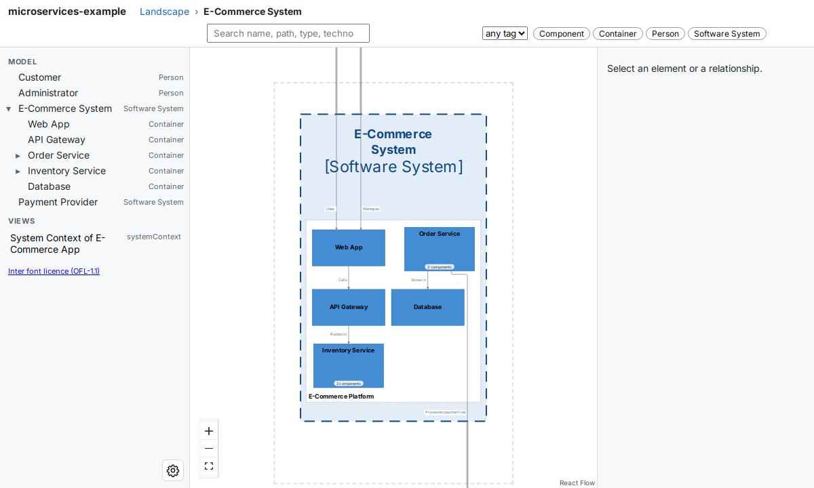
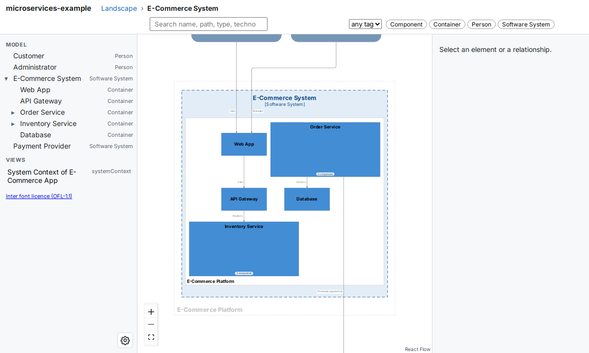

Command reference¶
The buildzr command turns the architecture models that you write in Python into built workspaces: folders of web pages that draw your diagrams in a browser, with the model data next to them. It also serves them, so that you and other people can open them.
This page is the reference of the command: every option, its default, and every exit code. To learn the commands step by step, follow the Quick Start, then Serve your workspaces.
The command has three subcommands:
buildzr buildruns the Python files of your workspaces folder and writes one built workspace for each workspace they create.buildzr exportruns one model file and writes its workspaces as Structurizr JSON, PlantUML, SVG or PNG files, for other tools and for documents.buildzr servebuilds what is missing or out of date, then serves every built workspace so that you can open it in a browser.
Find the page for your task¶
| You want to… | Read |
|---|---|
| Describe your architecture in Python | Quick Start and the User Guide |
| Open your model in a browser | Quick Start |
| Serve several workspaces, on your machine or for a team | Serve your workspaces |
| Put the built workspaces on a web server you already have | Hosting the built workspaces elsewhere |
| Let scripts, CI (continuous integration) jobs, dashboards and AI assistants read your model | The Model API and the recipes |
| Write JSON, PlantUML, SVG or PNG files from a model file | buildzr export and Export |
| Keep your settings in one file | buildzr.yaml |
| Link to one box of a diagram | Viewer links |
Words used on this page¶
| Word | Meaning |
|---|---|
| workspace | A Workspace(...) that you write in Python. It is also what readers open: its viewer, its data and its Model API, at /<name>/ of buildzr serve. |
| workspaces folder | The folder of Python files that create your workspaces: workspaces/ unless -w or the workspaces: key of buildzr.yaml names another one. One file may create several workspaces. |
| model file | One Python file of the workspaces folder. |
| built workspace | The folder that buildzr build writes for one workspace: the viewer, the model data and a file called build.json. |
| build output | The folder that holds every built workspace, one subfolder per workspace. Default: .buildzr/build. |
| viewer | The web page inside a built workspace that draws the diagrams. A workspace built with --no-viewer has the model data only and is called a data-only workspace. |
| modelHash | A fingerprint of the model, shown as sha256: and the start of a hash. The same model always gives the same hash. |
| Model API | The part of buildzr serve that answers questions about a model as JSON (a text format for data), under /<name>/api/v1/. |
buildzr.yaml |
The optional config file of your project. It holds the workspaces folder and the build settings. |
Requirements and installation¶
You need:
- Python 3.10 or newer.
- Node.js 18 or newer on the machine that builds:
buildzr build, andbuildzr servewhen a workspace is missing or out of date. The layout step of the build runs on Node. Check your version withnode --version. Serving workspaces that are already built does not need Node. - The
buildzrpackage. Installing it also installs thebuildzrcommand.
Install the package with pip:
If your project uses uv, add the package to it instead:
Run the command without installing it¶
uv includes a tool called uvx, so install uv first. uvx runs a command in a temporary environment, and you do not install anything into your project. Put uvx in front of each command on this page, for example uvx buildzr build.
The temporary environment contains buildzr, so your model file can import it. If your model file imports other packages, add each one with --with:
Commands and their options¶
How the commands find their settings¶
Each setting comes from the first of these that has it:
- An option on the command line.
buildzr.yaml. Whenworkspaces:is a list, thebuild:of a file’s entry comes before thebuild:of the whole file; see Choosing which files to build.- The built-in default.
The tables below list every option. buildzr COMMAND --help prints the same list.
buildzr --version¶
--version prints the installed version of buildzr, as buildzr <version>, and exits with code 0. Run it to check which version a machine or a CI job uses:
The version in the output above is an example. buildzr --help lists --version next to the three subcommands.
buildzr build¶
build runs every model file of the workspaces folder, each in a fresh Python process, lays out the diagrams of every workspace the files create, checks the result, and writes each one to <build output>/<name>/. It always builds every workspace; serve is the command that builds only what is out of date.
| Option | What it does |
|---|---|
-w PATH, --workspaces PATH |
The Python file or folder that creates workspaces. It takes one path, and it replaces workspaces: of buildzr.yaml, whether that is a path or a list of files and folders. The build: settings of the file still apply; the settings of a list entry do not. Default: workspaces: in buildzr.yaml, else the folder workspaces. |
--k N |
Room for a box that contains other boxes, as a multiple of the area of an empty box. Raise it if the insides of such boxes are too small to read; lower it for compact diagrams. A whole number of at least 1. Default: build.k in buildzr.yaml, else 4. See Choosing a value for --k. |
--text-color {wcag,c4} |
The text colour on boxes whose styles do not set one. wcag picks black or white, whichever contrasts more with the box, following the Web Content Accessibility Guidelines (WCAG). c4 uses the default C4 text colours. Default: build.text_color, else wcag. |
--no-viewer |
Build data-only workspaces: the model data without the viewer. It also applies to the entries of a workspaces: list that set viewer: true. |
-c FILE, --config FILE |
The config file. Default: buildzr.yaml, searched from the current folder upward. |
-v, --verbose |
Also show the line from the step that runs each model file. It counts the elements, relationships, views and levels of each workspace, and names a temporary folder. Errors are always shown. |
-o DIR, --out DIR |
The build output. Default: build.out, else .buildzr/build. |
Which files run¶
- With a folder,
buildruns every.pyfile in it and in its subfolders, in the order of their paths. - Files and folders whose name starts with
_or.are skipped, and so is__pycache__. - A file that creates no workspace is skipped with one line,
skipped <file>: it creates no workspace. - Each file runs in its own Python process, in a temporary folder, so a model file that calls
w.save()does not write into your project.
The name of a built workspace¶
Each workspace is written to a folder named after the workspace, and served at the same name: Workspace('Big Bank plc') becomes big-bank-plc, at /big-bank-plc/. The rule:
- Upper-case letters become lower case. Every character other than
atoz,0to9,.,_and-becomes-. - Characters at the start that are not a letter or a digit are removed. The name is cut to 64 characters.
- An empty name falls back to the name of the file without
.py. - These names are reserved, because they would hide a file or an address of
buildzr serve:api,assets,data,_buildzr,index.html,build.jsonandllms.txt. A workspace with one of them fails; rename it. - When two workspaces get the same name,
buildstops before it writes anything, with one error that names both workspaces and their files. - A model file that imports another model file also runs the
with Workspace(...)blocks of that file, so it creates the same workspaces a second time.buildthen stops with the same error.
When a workspace is broken¶
Before build puts a built workspace in place, it checks its data: the JSON schemas, and rules that the schemas cannot express, such as boxes inside their frames and arrows that end on the border of their boxes. What happens when a step fails depends on what is at fault:
| At fault | Examples | What build does |
Exit code |
|---|---|---|---|
| The workspace | Its model file raises an error. The layout fails on this model. The data fails its checks. | Writes a broken built workspace, which replaces the previous one, and prints a block for it. | 1 |
| The machine | Node.js is missing or too old. The disk is full. Permission is denied. The build process is killed. | Writes nothing: the previous built workspace stays as it was. Prints one error line. | 1 |
- The other workspaces are still built either way.
- The
build.jsonof every built workspace hasstatus:ok, orbroken. A broken one also hasstage, the step that failed (model,layoutorcheck), anderrors, at most 50 errors of at most 500 characters each. - After a failure at the
checkstep, the data is kept next tobuild.json, so that you can look at what is wrong. After a failure at themodelorlayoutstep, there is no data: the folder holdsbuild.jsonand the viewer, which shows the errors. - A model file that raises an error before it creates any workspace breaks the workspaces it built last time. On its first build, its broken workspace is named after the file.
- A broken workspace is up to date like an ok one, so
servedoes not build the same broken model file again and again. Change the file, or use--rebuild. - A workspace with a reserved name fails without a broken workspace, because it cannot be written under that name.
- Every built workspace, ok or broken, is written to a temporary folder first and then put in place in one step, so a reader never sees half of one.
The block of a broken workspace, red in a terminal:
buildzr: BROKEN: workspace billing (workspaces/billing.py) failed at the model step
NameError: name 'ledger' is not defined
billing.py, line 6: invoicing >> "Collects payments through" >> ledger
this workspace is broken; the viewer says so
Serve your workspaces shows what the viewer, the list at / and the Model API show for a broken workspace.
Removing built workspaces you no longer build¶
A full build, without -w or with -w and a folder, removes a built workspace when its model file was deleted, or when its model file ran without failure in this build and no longer creates it (you renamed or removed the workspace in the file). It prints one line for each, such as removed old-name: its model file workspaces/old-name.py is gone. When workspaces: in buildzr.yaml is a list, a full build is a build without -w, and it also removes the built workspaces of a file you took off the list. A model file that failed because of the machine keeps all its previous built workspaces. Only built workspaces built from the same workspaces folder are removed: build.json records that folder, so buildzr build -w other/folder never removes the workspaces of your workspaces folder. A workspace built from a workspaces: list also records the config file of the list, so only a build of that same list removes it. A folder without a build.json that names its model file is never removed, nor is anything when you build one file with -w FILE. serve never removes anything: run buildzr build to tidy the build output.
Choosing a value for --k¶
--k sets how much room the layout gives the inside of a box that contains other boxes, such as a software system with containers. The room for the inside is at most N times the area of an empty box; the box itself is a little larger, because it also holds its own name. build.k in buildzr.yaml sets the same value.
When you expand such a box in the viewer, its inside is drawn in that room. If the inside needs more room, it is shrunk to fit; it is never enlarged. For example, in the model examples/buildzr_models_example.py of the buildzr repository, the inside of the E-Commerce System is drawn at 23% of its full size with --k 1, 35% with 4 (the default), 50% with 9 and 68% with 16.
- Raise the value when the inside of an expanded box is too small to read. The cost: boxes with an inside take more room on the diagram of their parent, so the whole diagram is larger, and the viewer shows it smaller when it fits it to the screen.
- Lower the value for compact diagrams. You then zoom in to read the inside of an expanded box.
- Once a box has all the room its inside needs, the inside is drawn at full size, and a larger value changes nothing more for that box. In the example, the Order Service container reaches full size at 9.
- A model in which no box contains other boxes, such as the one in the Quick Start, looks the same at every value.
- The value is a whole number of at least 1. The default is 4.

With --k 1, the containers fill a small area, and the viewer zooms in to show it. Order Service and Inventory Service, which contain components, are about the same size as the other containers.

With --k 9, Order Service and Inventory Service get room for their components, so they are more than twice as wide and as tall as the other containers, and the viewer zooms out to fit the larger diagram.
buildzr export¶
buildzr export [-h] [-f FORMAT] [-o DIR] [--workspace NAME] [--index N] [--layout {dot,smetana}] [--pretty] FILE
export runs one model file FILE, in a fresh Python process in a temporary folder (so a model file that still calls w.save() does not write into your project and does not print a deprecation warning), and writes every workspace it creates, or the one you pick, as files. It does not use buildzr.yaml, Node.js or the viewer. A file that creates several workspaces gives one subfolder for each:
export/
big-bank-plc/
workspace.json format json
SystemContext.puml formats plantuml, svg and png
SystemContext.svg format svg
SystemContext.png format png
The subfolder is named like a built workspace, and two workspaces of one file that would share a name get -2, -3 and so on in the order the file creates them. Files of an earlier export are overwritten, and files that this export does not write are left alone. Each file written is listed on a line wrote <path>.
| Option | What it does |
|---|---|
FILE |
The Python model file. It must exist and be a file, not a folder; use build for a folder. |
-f FORMAT, --format FORMAT |
json (one workspace.json), plantuml (one .puml file per view), svg or png (one image per view, next to its .puml file). Repeat the option to write several formats in one run. Default: json. plantuml, svg and png need pip install "buildzr[export-plantuml]" and Java 11 or newer; svg and png also need Graphviz, unless you use --layout smetana. |
-o DIR, --out DIR |
The output folder. Default: export. |
--workspace NAME |
Export only the workspace with this name. If the file creates no such workspace, or two with that name, the command says so, lists the workspaces with their numbers, and writes nothing. |
--index N |
Export only the N-th workspace the file creates, counting from 0. Use it when two workspaces share a name. It cannot be used with --workspace. |
--layout {dot,smetana} |
The PlantUML layout engine for plantuml, svg and png. dot uses Graphviz. smetana is pure Java and needs no Graphviz, with a rougher layout, and adds !pragma layout smetana to the .puml files. Default: dot. |
--pretty |
Indent the JSON with two spaces. By default the JSON is on one line, as w.save() wrote it. |
- A format that cannot work here (no
jpype1, or Graphviz missing forsvgandpngwithdot) is reported before any file is written, so the run leaves no half-finished folder. - A workspace without views gets
workspace.jsononly, and a warning for each diagram format. - If the model file raises an error,
exportprints it, with the lines of your file, and writes nothing.
$ buildzr export workspaces/shop.py -f json -f svg --layout smetana -o diagrams
wrote diagrams/shop/workspace.json
wrote diagrams/shop/SystemContext.svg
buildzr serve¶
buildzr serve [-h] [--example] [--no-build] [--rebuild] [-c FILE] [-v] [-p PORT] [--host HOST] [--public-url URL] [--cors-origin ORIGIN] [PATH]
serve first builds what is missing or out of date, then serves every built workspace of the build output. It only reads: it answers GET and HEAD requests, and nothing can change a workspace through it.
| Option | What it does |
|---|---|
PATH |
What to serve. A workspaces folder or a model file: serve builds its workspaces when they are missing or out of date, then serves the build output. It replaces workspaces: of buildzr.yaml, as -w does for build. A folder that already holds built workspaces (it has a build.json, or subfolders that have one): serve serves it as it is, and builds nothing. Default: workspaces: in buildzr.yaml (a path or a list), else the folder workspaces. |
--example |
Serve the bundled example workspace, an online shop, instead of your own. See Try the bundled example. Cannot be combined with PATH, --no-build, --rebuild, -c or -v. |
--no-build |
Serve the build output as it is, without building. Node is then not needed. |
--rebuild |
Build every workspace again, also the ones that are up to date. |
-c FILE, --config FILE |
The config file. Default: buildzr.yaml, searched from the current folder upward. |
-v, --verbose |
The same as for build. |
-p PORT, --port PORT |
The port, 1 to 65535. Default: serve.port in buildzr.yaml, else 8000. |
--host HOST |
The address to listen on. Default: serve.host in buildzr.yaml, else 127.0.0.1: only this machine can connect. To let other machines connect, pass 0.0.0.0; do this only on purpose. |
--public-url URL |
The address at which readers reach this server (http:// or https://), for example behind a proxy. The Model API builds its viewerUrl links from it. Default: serve.public_url in buildzr.yaml, else none. |
--cors-origin ORIGIN |
Let a web page from ORIGIN read the Model API from a browser (CORS, Cross-Origin Resource Sharing). Repeat the option for more origins. There is no wildcard. Default: serve.cors_origins in buildzr.yaml, else none. The option replaces the list of the file; it does not add to it. |
Try the bundled example¶
To see the viewer before you write a model, run:
serve prints the address of the example, http://127.0.0.1:8000/example/ by default. It does not open a browser; open the address yourself. The example is an online shop with all six kinds of view (system landscape, system context, container, component, dynamic and deployment), so you can explore the viewer on a realistic diagram.
The example is hermetic: it is already built and shipped inside buildzr, so Node is not needed, and serve builds nothing.
- It ignores the folder you run it in:
buildzr.yamlis not read (even a broken one), and your workspaces folder and build output are not touched. - It writes nothing into the current folder. The files it serves are copied to a temporary folder, which
serveremoves when you stop it with Ctrl+C or a termination signal (SIGTERM). -p/--port,--host,--public-urland--cors-originwork as usual, with their defaults (not theserve:section of anybuildzr.yaml). The Model API of the example is at/example/api/v1/.PATH,--no-build,--rebuild,-cand-vhave no meaning for an example that is not built from your files, soserverefuses them with exit code 2 instead of ignoring them silently, for examplebuildzr: error: --example serves the bundled example, so it cannot be used with PATH.
When a built workspace is out of date¶
A built workspace is rebuilt when its folder is missing, or when its fingerprint changed. build records the fingerprint in the build.json of the workspace. It is a sha256 hash of:
- the model file that creates the workspace,
- every file whose name starts with
_and ends with.pyin the workspaces folder and its subfolders (for aworkspaces:list: in the folder of the file’s entry, or the folder that holds the listed file, and their subfolders), - the version of buildzr,
- the settings that change the output, as they are for this workspace:
k,text_colorandviewer, from an option, the file’s list entry orbuild:. Changing thekof one list entry rebuilds only the workspaces of that entry.
File dates are not used. Code that a model file imports from anywhere else is not part of the fingerprint: after you change such code, start serve with --rebuild.
What serve serves¶
| Address | Answer |
|---|---|
/<name>/ |
The viewer of the workspace <name>, and its files, such as /<name>/data/index.json. |
/<name>/api/v1/ |
The Model API of the workspace. |
/<name>/llms.txt |
A short plain-text page that tells AI tools where the Model API of the workspace is. |
/ |
With one workspace, a redirect (HTTP 302) to /<name>/, or to its Model API /<name>/api/v1/ when it is data-only. With several, a page that links to each one: to its viewer, or to its Model API when it is data-only. |
/_buildzr/v1/workspaces |
The list of workspaces as JSON. See Serve your workspaces. |
- When
servestarts, it prints each build failure asbuilddoes, and a block for every broken workspace in the build output, also those built earlier. It serves every built workspace, broken ones included:/marks them as broken, and/_buildzr/v1/workspacesgives theirstatus,stageanderrors. If nothing can be served, it exits with code 1. - If a workspace must be built but Node is not installed,
servesays so in one line and serves what is already built. servelooks at the build output again when someone opens/or the list, and when an address names a workspace it does not know yet. A workspace thatbuildzr buildadds in another terminal therefore appears without a restart. A workspace in the middle of being replaced is not served for that moment: its address answers 404.
Exit codes¶
| Code | Meaning |
|---|---|
| 0 | Success. serve exits with 0 when you stop it with Ctrl+C (serve --example: also with SIGTERM). |
| 1 | A workspace is broken or could not be built, there was nothing to serve, or the port is in use. For export: the model file raised an error or creates no workspace, or the export failed (for example, Java or Graphviz is missing). |
| 2 | A usage or config error: an unknown option, an option that cannot be combined with another (such as --example with PATH), a workspaces folder or path that does not exist, an export file that does not exist, is a folder, or has no workspace of the name or number you gave, or a problem in buildzr.yaml. |
Error messages from the command start with buildzr: error:. Problems in buildzr.yaml are listed one per line, as buildzr.yaml:<line>: <key>: <message>.
In the examples on these pages, a last line such as [exit code 2] shows the exit code. The command does not print that line.